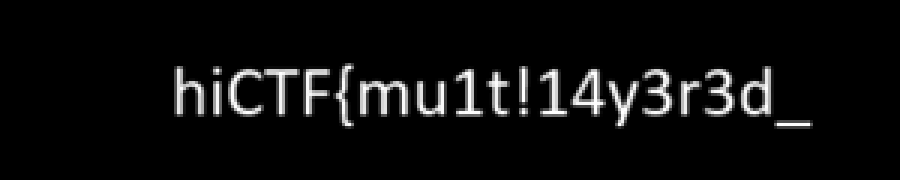

Flag: hiCTF{mu1t!14y3r3d_st3g0o_ju5t_l0v333}
Files
chall.png(8,877,501 B) - declared 4000x4000, but the IDAT actually decodes to 4000x4500.
Solve (four layers)
Layer 1 - hidden rows in the PNG (alpha channel)
The IHDR says 4000x4000 but zlib/PIL decode the IDAT to 4000x4500 (500 extra rows;
the IHDR CRC was computed over the true 4500 height). The extra rows are black in RGB
and carry rasterised text in the alpha channel at the bottom-right (~x3759-3969, y4461-4481):
hiCTF{mu1t!14y3r3d_ -> "multilayered_"The alpha channel of the hidden rows, cropped and enlarged:

Layer 2 - appended ZIP after IEND
IEND ends at offset 5518394; the remaining 3,359,095 bytes are a password-protected
(ZipCrypto) ZIP containing carrier.jpg. Cracked with a wordlist:
dreamcatcher (hint: poem line "Dreams take flight")carrier.jpg (2816x1536) is a photo of a parchment poem titled "WILDER ECHOES".
Layer 3 - steghide on carrier.jpg
The poem's words are the password source. steghide payload password:
profound (poem line "A profound stillness settles")Extracts finall.jpg (495x647, a Gozo/Malta alley photo).
Layer 4 - hidden strip in the JPEG scan of finall.jpg
finall.jpg triggers libjpeg: "3377 extraneous bytes before marker 0xd9" - the scan holds
MCU rows for a taller image than the declared height. Patch the SOF0 height
(offset 199-200, 0x0287=647) upward and re-decode; the strip below y=647 renders:
st3g0o_ju5t_l0v333}Flag
hiCTF{mu1t!14y3r3d_st3g0o_ju5t_l0v333}